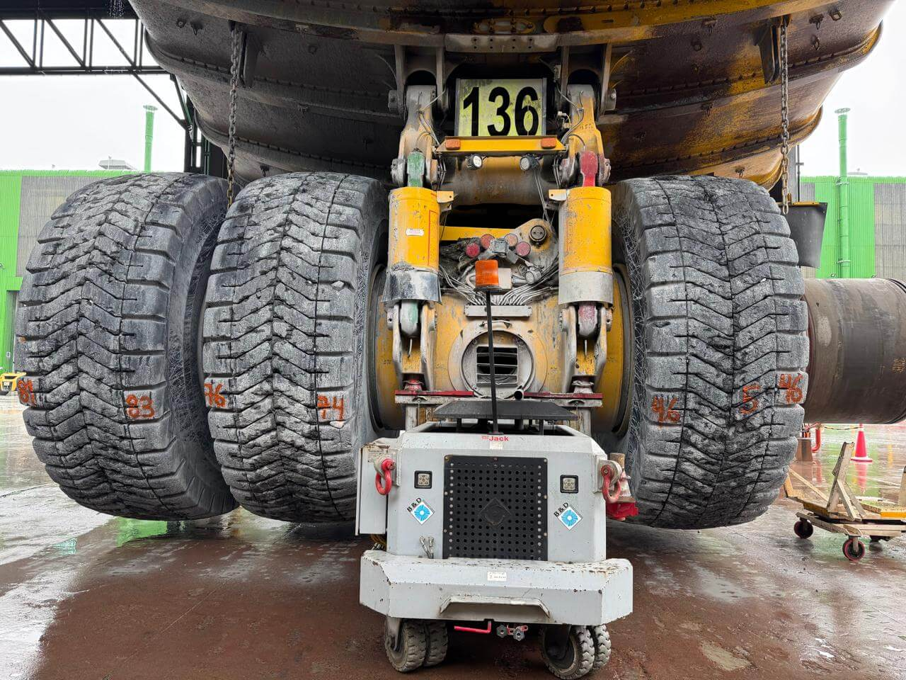
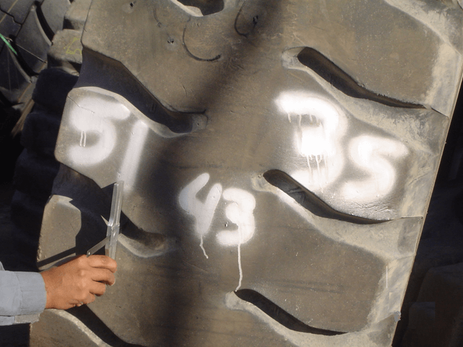

Información técnica para la medición de cocada o goma remanente para el correcto gemelado de neumáticos gigantes.
Información para la correcta política de rotaciones de neumáticos gigantes
La correcta aplicación de estas técnicas impactara positivamente en la vida útil de los neumáticos.
Medición de Neumático Gigante
Goma remanente es el promedio de dos medidas del neumático en milímetros.
Fórmula
Ejemplo:
Resultado

Calculo del porcentaje de desgaste de la banda de rodado.
GO = Goma Original GR = Goma Remanente
Fórmula
Ejemplo:
GR = 43 mm
GO = 87 mm